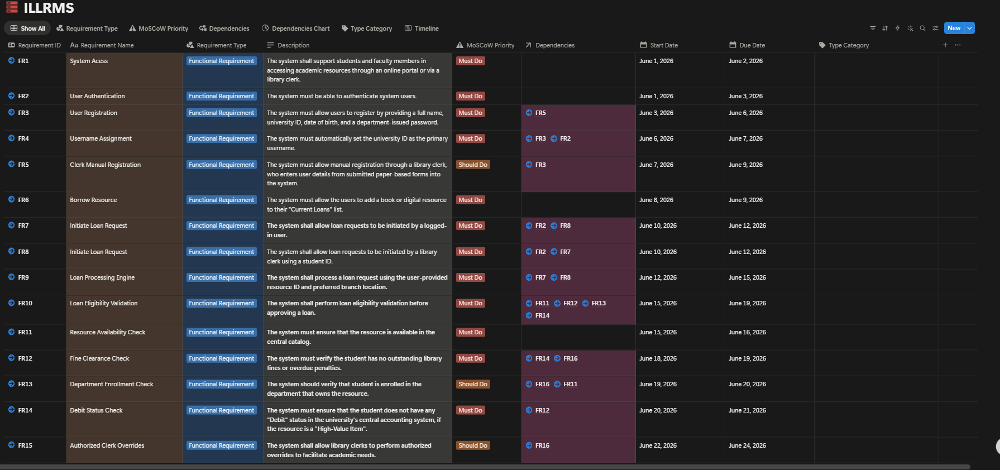
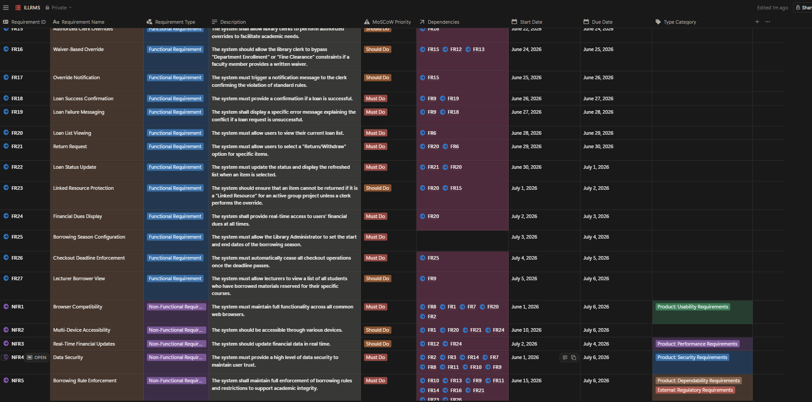
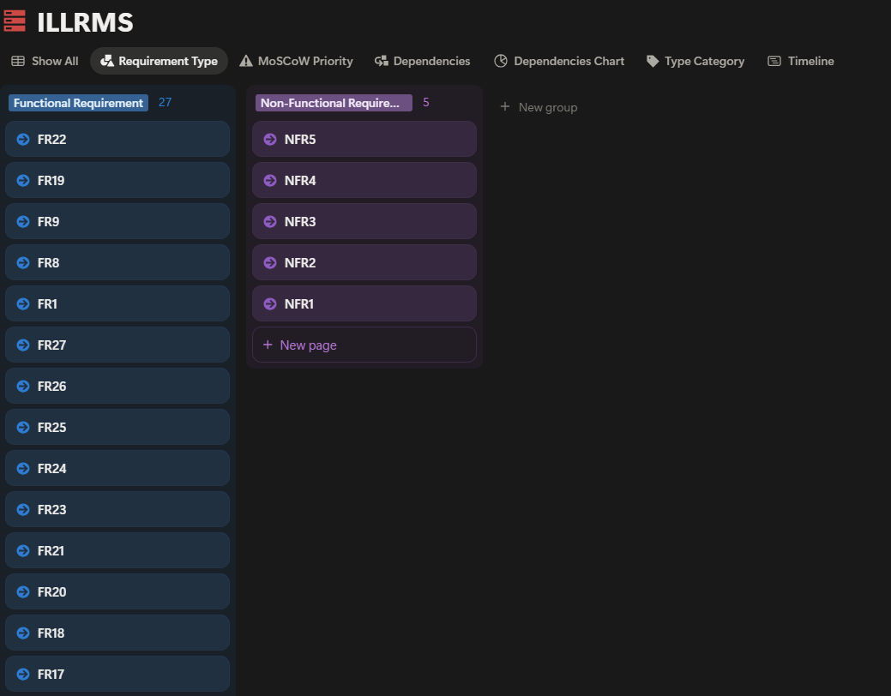
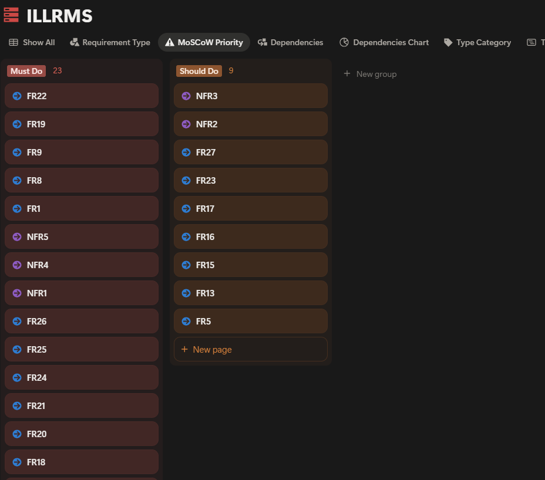
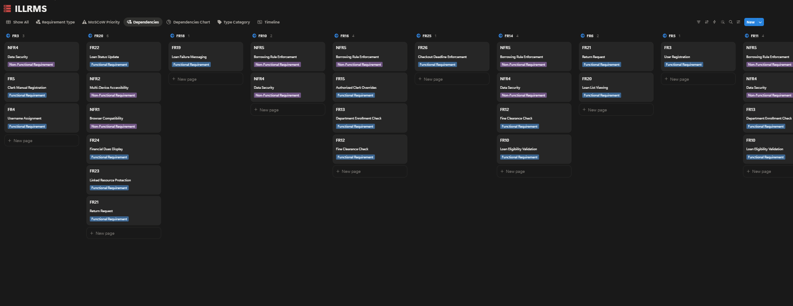
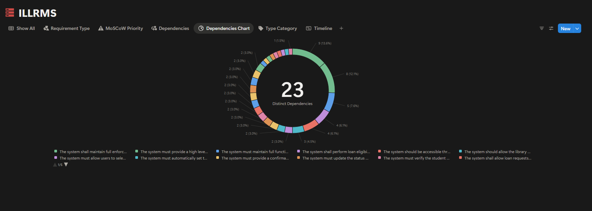
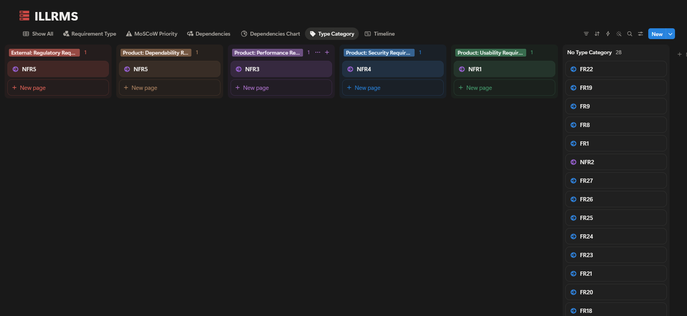
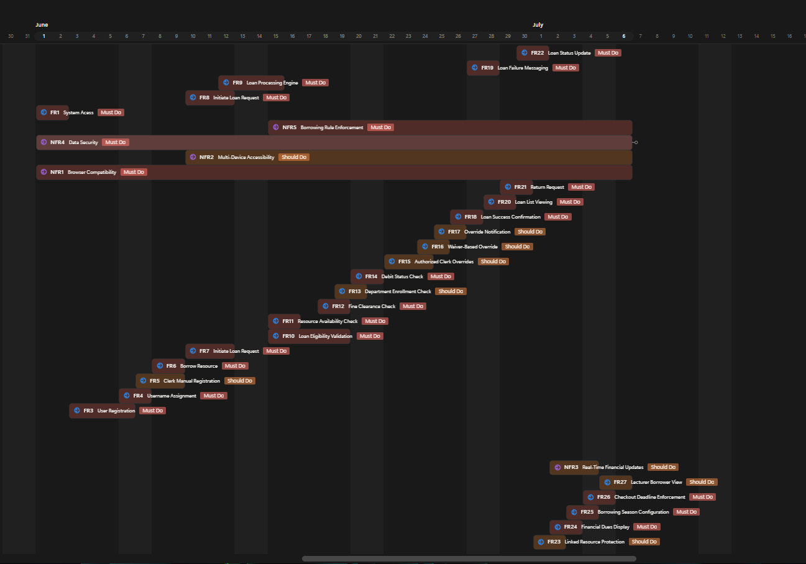

ILLRMS Analysis
Software requirements analysis for an Integrated Library & Learning Resource Management System — covering requirement extraction, stakeholder identification, MoSCoW prioritization, dependency analysis, and use case modeling.
Project Overview
ILLRMS is a proposed university library system that allows students, faculty members, and library clerks to manage academic resource borrowing through an online portal. The system handles user authentication, loan eligibility validation, financial due tracking, and borrowing season control — all while enforcing university academic integrity policies.
Direct Stakeholders
Students, Faculty Members, Library Clerks, Library Administrator, Lecturers
Indirect Stakeholders
University Central Accounting System, University Registration System, Central Catalog
Functional Requirements
| ID | Requirement | Priority |
|---|---|---|
| FR1 | Support students and faculty in accessing academic resources via portal or library clerk | Must Do |
| FR2 | Authenticate system users | Must Do |
| FR3 | Allow users to register with full name, university ID, date of birth, and password | Must Do |
| FR4 | Automatically set university ID as primary username | Must Do |
| FR5 | Allow manual registration through a library clerk via paper-based forms | Should Do |
| FR6 | Allow users to add a book or digital resource to their Current Loans list | Must Do |
| FR7 | Allow loan requests to be initiated by a logged-in user | Must Do |
| FR8 | Allow loan requests to be initiated by a library clerk using a student ID | Must Do |
| FR9 | Process loan request using resource ID and preferred branch location | Must Do |
| FR10 | Perform loan eligibility validation before approving a loan | Must Do |
| FR11 | Ensure resource is available in the central catalog | Must Do |
| FR12 | Verify the student has no outstanding library fines or overdue penalties | Must Do |
| FR13 | Verify student is enrolled in the department that owns the resource | Should Do |
| FR14 | Ensure no Debit status for High-Value Item loans | Must Do |
| FR15 | Allow library clerks to perform authorized overrides | Should Do |
| FR16 | Allow clerk to bypass Department Enrollment or Fine Clearance with faculty waiver | Should Do |
| FR17 | Trigger notification to clerk confirming violation of standard rules | Should Do |
| FR18 | Provide confirmation if a loan is successful | Must Do |
| FR19 | Display specific error message if loan request is unsuccessful | Must Do |
| FR20 | Allow users to view their current loan list | Must Do |
| FR21 | Allow users to select a Return/Withdraw option for specific items | Must Do |
| FR22 | Update status and display refreshed list when an item is selected | Must Do |
| FR23 | Prevent return of Linked Resource for active group project without clerk override | Should Do |
| FR24 | Provide real-time access to users' financial dues | Must Do |
| FR25 | Allow Library Administrator to set borrowing season start and end dates | Must Do |
| FR26 | Automatically cease all checkout operations once deadline passes | Must Do |
| FR27 | Allow lecturers to view students who borrowed materials for their courses | Should Do |
Non-Functional Requirements
| ID | Requirement | Priority |
|---|---|---|
| NFR1 | Full functionality across all common web browsers | Must Do |
| NFR2 | Accessible through various devices | Should Do |
| NFR3 | Update financial data in real time | Should Do |
| NFR4 | High level of data security to maintain user trust | Must Do |
| NFR5 | Full enforcement of borrowing rules and restrictions to support academic integrity | Must Do |
MoSCoW Prioritization
Must Do — High Priority
User authentication & registration (FR1–FR4), borrowing & loan processing (FR6–FR12, FR14, FR18–FR19), financial & administrative control (FR24–FR26), security & reliability (NFR1, NFR4, NFR5).
Should Do — Medium Priority
Additional validation (FR13, FR23), clerk override & exception handling (FR15–FR17), accessibility & performance (NFR2, NFR3), manual & assisted operations (FR5, FR27).
Could Do — Low Priority
None — all identified requirements contribute meaningfully to the system.
Use Case Diagram

Diagrams & Analysis








Tools Used
Final Project · Software Requirements Analysis — 13325
Princess Sumaya University for Technology